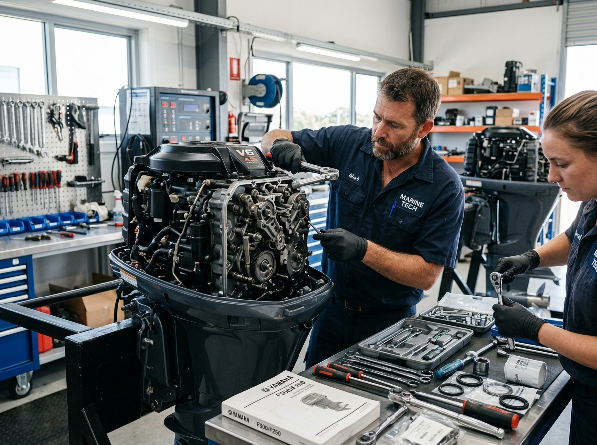
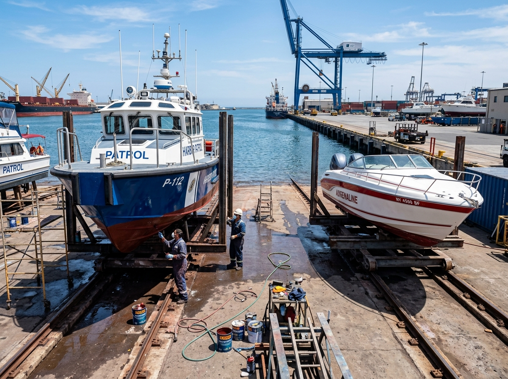
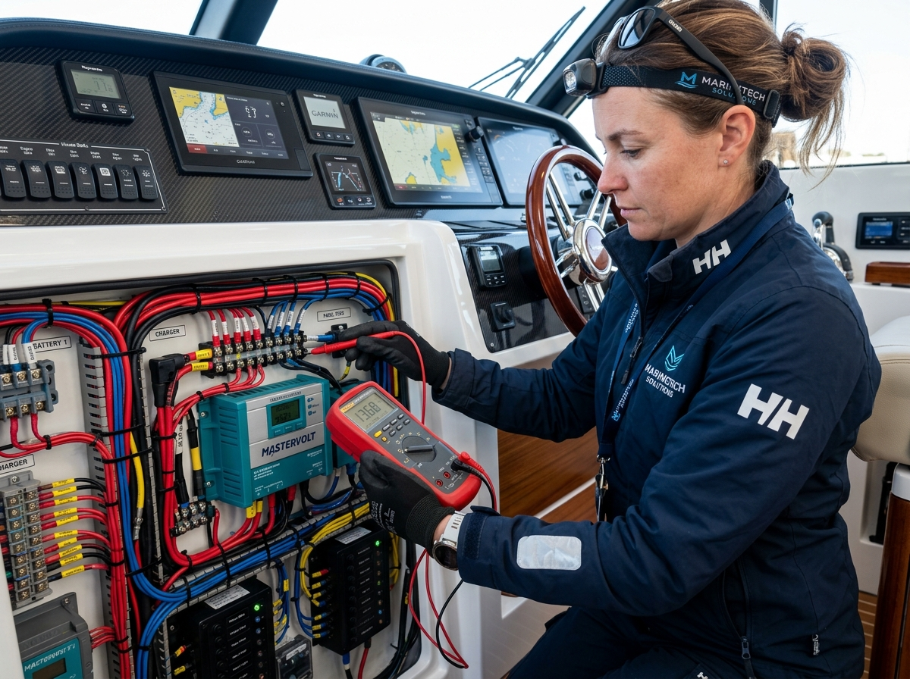

Solusi Andal & Profesional untuk Performa Armada Maritim Anda
PT Aillena Marine Indonesia menghadirkan layanan terintegrasi mulai dari docking rel khusus, overhaul mesin tempel bersertifikat Yamaha, rekondisi lambung fiber & antifouling, hingga uji coba laut (Sea Trial).
13 Teknisi Bersertifikat
Yamaha OBM Technical Training
E-Katalog LKPP
Terdaftar Resmi INAPROC
30 Titik Sea Trial Teruji
Garansi Standar Operasional BAST
Dedikasi Tinggi untuk Keandalan Armada Maritim
Mengenal lebih dekat PT Aillena Marine Indonesia serta komitmen kami dalam memberikan layanan berstandar tinggi.
Tentang PT Aillena Marine Indonesia
Kami adalah perusahaan terkemuka di industri kelautan yang berfokus pada perawatan bodi kapal, perawatan mesin, dan pergantian suku cadang mesin. Dengan pengalaman bertahun-tahun dan tim profesional yang berdedikasi, kami siap memenuhi kebutuhan spesifik para klien maritim di Indonesia.
Didukung fasilitas workshop Memey Marine (Bengkel Mesin Tempel Yamaha) di Semarang, kami menangani berbagai skala perawatan mulai dari kapal patroli, kapal instansi kedaruratan, hingga armada komersial dan perahu rekreasi.
Our Mission
Menjadi penyedia jasa layanan perawatan armada lautan terbaik.
Our Vision
Memberikan layanan yang aman dan efisien kepada pelanggan.
Legalitas Resmi & Standar Tata Kelola
Berbadan hukum resmi Perseroan Terbatas dengan Surat Keputusan Menteri Hukum & HAM, NIB 0711250099035, NPWP Badan terdaftar, dan status penyedia aktif di INAPROC E-Katalog LKPP.
Maret Cuciati
Pengawasan Tata Kelola Perusahaan (GCG) & Pengendalian Legalitas
Firman Dwi Fauzi
Kepemimpinan Operasional Maritim & Kemitraan Klien Strategis
Overhaul total 2T/4T OBM, tune-up & scanner EFI YDIS
Rekonstruksi transom, bodi komposit fiber & gelcoat finishing
Pelapisan cat antifouling bawah lambung kapal anti-teritip
Wiring panel laut, pompa bilga, dan unit servis panggilan 24 jam

Layanan Terpadu Armada & Mesin Kapal
Standar pengerjaan presisi mulai dari pemeliharaan preventif, perbaikan struktural, hingga rekonstruksi mesin secara menyeluruh.
Engine Maintenance
Perawatan dan perbaikan mesin tempel kapal (Outboard Motor) oleh mekanik berpengalaman dan bersertifikat resmi untuk memastikan performa andal di lautan.
-
Tune Up
Pembersihan filter udara, penggantian oli (4T), penggantian busi, pembersihan karburator, dan penggantian oli gear ekor baling-baling.
-
Top Overhaul
Pembersihan kerak pada ruang bakar piston, pembersihan saluran pendingin mesin, serta penggantian packing/gasket.
-
General Overhaul
Pengangkatan mesin, pembongkaran menyeluruh part bagian dalam mesin, dan penggantian suku cadang yang mengalami kerusakan/keausan.

02Body Maintenance
Pemeliharaan dan perbaikan fisik bodi serta lambung kapal berbahan fiberglass dan komposit untuk memastikan ketahanan struktur terhadap benturan dan air laut.
-
Repair
Perbaikan bagian kapal yang rusak/bocor dengan penambalan komposit fiber (serat mat, roving, resin Yukalac 157 & katalis, dan talk).
-
Paint
Persiapan media kerja (pengamplasan, pendempulan, base coat) hingga aplikasi pengecatan protektif menggunakan cat standar kelautan.

03Electrical Services
Instalasi, diagnosis, dan perbaikan menyeluruh pada sistem kelistrikan kapal untuk menjaga keamanan kelistrikan dan keandalan instrumen saat berlayar.
-
Sistem Pengapian & Starter
Pengecekan dinamo starter, alternator, dan jalur pengapian mesin tempel.
-
Baterai & Pengisian Daya
Uji performa aki/baterai kapal, sistem charging, dan instalasi *battery switch*.
-
Wiring Panel & Instrumen
Peremajaan kabel bodi kapal tahan air asin, lampu navigasi, pompa bilga, dan sakelar instrumen.
5 Tahap Alur Pengerjaan Standar Kami
Transparansi dan ketelitian kerja di setiap tahap untuk menghasilkan kepuasan maksimal bagi pelanggan.
Identifikasi
Pemeriksaan menyeluruh terhadap kondisi fisik bodi, kelistrikan, dan kerusakan mesin kapal.
Penawaran
Penyusunan rincian estimasi biaya, suku cadang yang dibutuhkan, dan jadwal estimasi pengerjaan.
Pengerjaan
Eksekusi perbaikan bodi, tune up, atau overhaul oleh teknisi bersertifikat dengan standar pabrikan.
Sea Trial
Uji coba operasional langsung di perairan untuk memastikan stabilitas dan performa prima.
Laporan (Report)
Pemberian laporan teknis resmi pengerjaan dan serah terima unit kapal kembali kepada klien.
Bukti Nyata Kinerja Teknisi Kami di Lapangan
Dokumentasi asli pengerjaan teknisi bersertifikat PT Aillena Marine Indonesia di Workshop Memey Marine dan docking rel muara Semarang: dari overhaul mesin tempel Yamaha hingga pelapisan cat antifouling kapal.
 Pengecatan Bodi
Pengecatan Bodi
Pengecatan Presisi & Rekondisi Transom
Teknisi berseragam resmi dengan helm dan respirator mengaplikasikan cat maritim berkualitas tinggi pada bodi speedboat bermesin ganda.
 Docking Rel Muara
Docking Rel Muara
Pelapisan Antifouling Lambung di Jalur Rel
Pengecatan protektif anti-teritip laut pada lambung bawah kapal di atas bantalan rel kereta luncur muara untuk menjaga ketahanan laju kapal.
 Overhaul Mesin
Overhaul Mesin
Servis & Kalibrasi Lower Unit Yamaha
Mekanik bersertifikat membongkar dan merakit lower unit gearcase serta propeller stainless steel pada mesin tempel Yamaha dengan standar pabrikan.
Dukungan Brand Mesin Terkemuka
Klien & Instansi yang Mempercayai Kami
Telah dipercaya oleh berbagai kesatuan keamanan perairan, regu penyelamat, instansi pelabuhan, dan sektor industri strategis.
Kantor SAR Semarang, Pos SAR Jepara, Rembang, dan Pemalang.
Ditpolairud Polda Jateng, Polda DIY, Satpolairud Kendal, Pekalongan, dan Batang.
Kantor Kesyahbandaran dan Otoritas Pelabuhan Tg. Emas Semarang & Wilker Jawa Tengah.
Pengawasan Sumber Daya Kelautan dan Perikanan Satuan Pekalongan & Lamongan.
Operator Pembangkit Listrik Tenaga Uap (PLTU Batang 2x1.000 MW).
Hubungi Kami untuk Konsultasi & Layanan
Siap membantu perawatan, perbaikan darurat, atau pengadaan suku cadang armada kapal Anda.
Informasi Kantor & Bengkel
Silakan hubungi kontak resmi kami atau kirimkan formulir konsultasi untuk mendiskusikan kebutuhan armada kapal Anda.
Butuh Respon Cepat?
Hubungi layanan konsultasi kami secara langsung melalui WhatsApp.
Kirim Permintaan / Konsultasi Layanan
Isi formulir di bawah ini, tim teknis kami akan segera menghubungi Anda dengan penawaran terbaik.